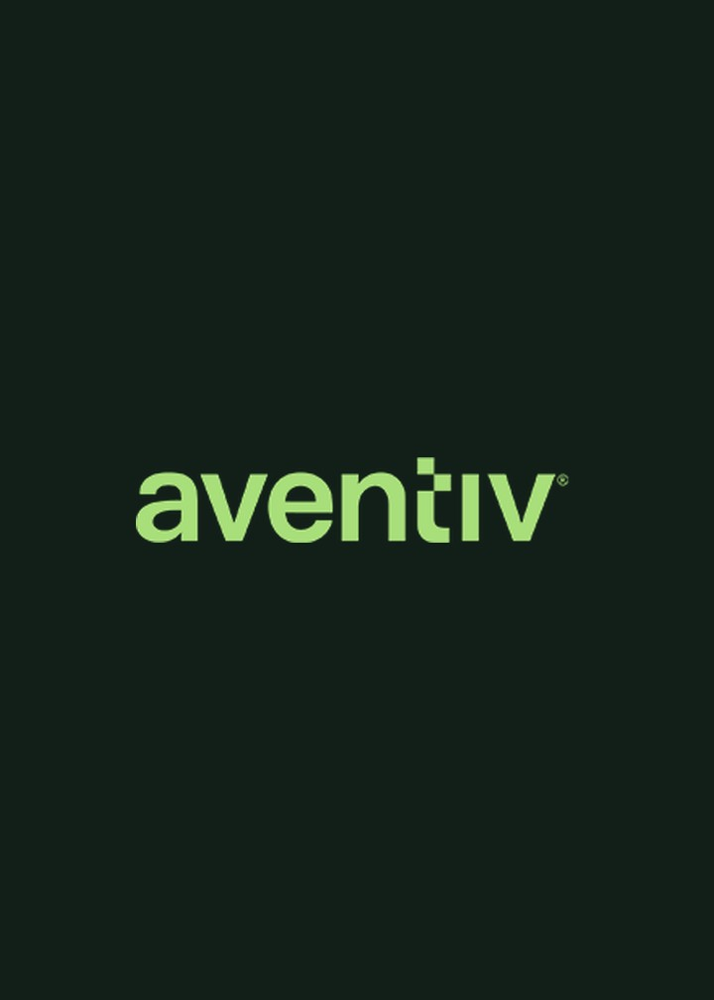
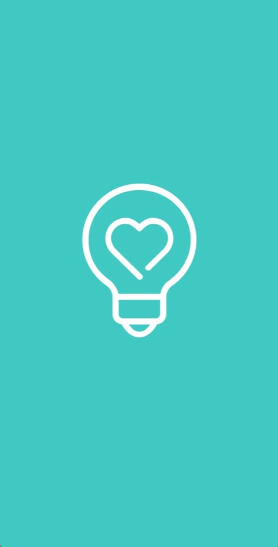
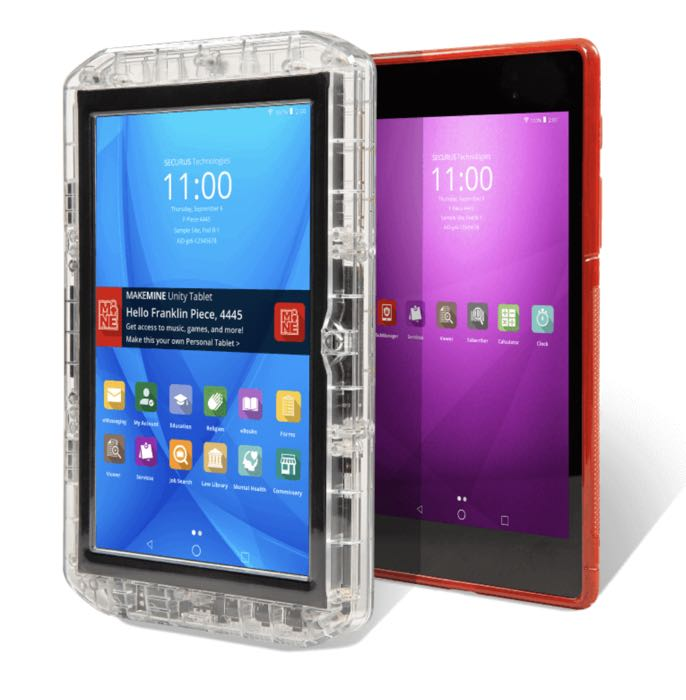
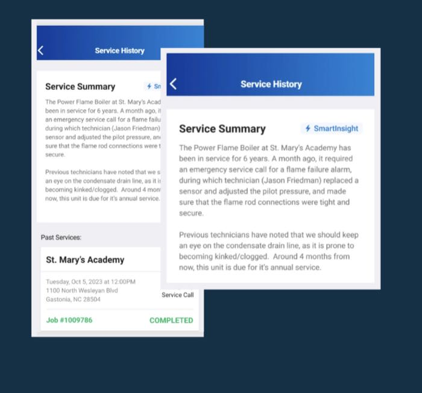
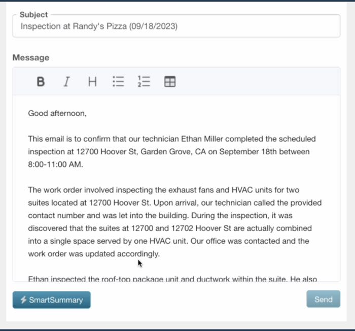
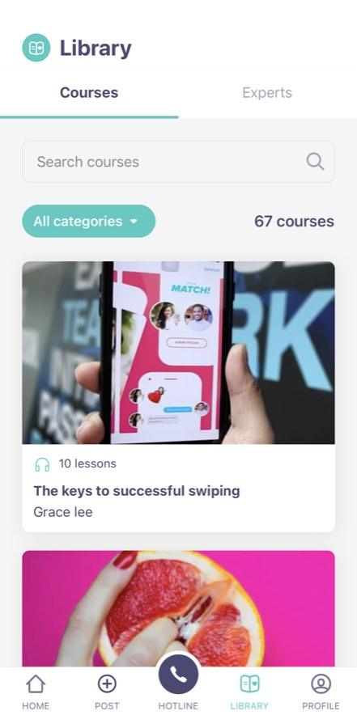
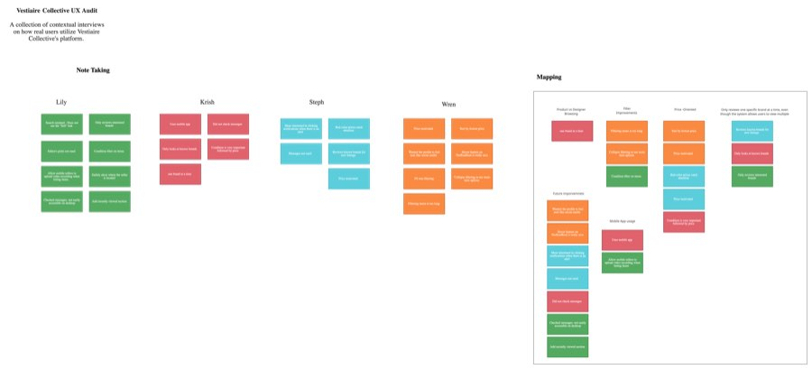
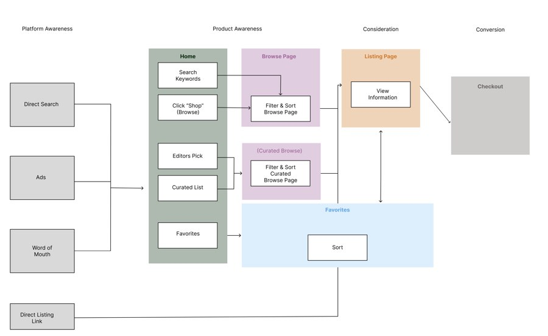
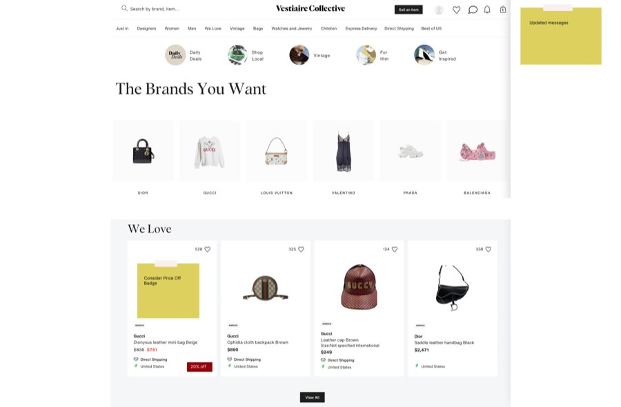
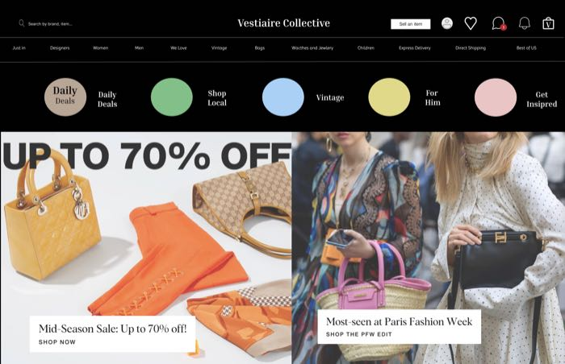

Product ManagementProduct Manager
Jessica Vilkhu
Business graduate with four product and project management internships across B2B SaaS and enterprise technology. Experienced in product discovery, roadmap prioritization, cross-functional collaboration, KPI tracking, and using user and performance data to drive product improvements.
Download résuméOpportunity to Impact
A closer look at where research, roadmapping, and cross-functional execution turned into shipped product outcomes.

User ResearchAventiv Technologies
Product Management Intern · 2025
- Partnered with product, finance, and engineering stakeholders to develop an End-of-Life (EOL) strategy for 6 legacy products, analyzing cost, usage, and performance data to identify cost reduction, licensing optimization, and revenue opportunities.
- Built multi-year demand forecasts for EVOTAB rollout by analyzing deployment and product usage data across 815,000+ tablets, identifying trends that informed capital allocation, procurement planning, and product roadmap sequencing.
- Built and maintained real-time project dashboards and records tracking JPay tablet migrations across facilities and states, giving leadership clear progress updates on adoption, risks, dependencies, and on-time delivery.

ServiceTrade
Product Management Intern · 2024
- Owned SMART AI Comment and Transcribe features, reducing technicians' manual data entry time by 2+ hours per week.
- Analyzed user interaction data and feedback signals to evaluate model performance, driving improvements that increased AI accuracy by 35%.
- Analyzed demo funnel behavior and conversion data to identify drop-off points, partnering with design on a redesign that increased SDR lead conversions by 28%.
- Resolved UI/UX inconsistencies between iOS and Android by partnering with designers and developers to unify the customer experience across platforms.
- Organized GTM product roadmaps and backlog prioritization, aligning high-value initiatives with user insights, business goals, and OKRs across marketing, sales, and engineering.
- Mapped team workflows, standardized internal documentation, and improved process visibility in Miro, reducing information lookup time by 23% and strengthening cross-team knowledge sharing.


Red Hat
Project Management Intern · 2023
- Managed project intake, requirements documentation, and stakeholder meetings for cross-functional initiatives, aligning scope, timelines, deliverables, and action items across teams.
- Led internal change communications for 1,500+ employees, developing monthly newsletters and presentations that increased adoption of new tools, standardized processes, and best practices.
- Standardized internal marketing file structures and workflows in SharePoint, reducing project turnaround time by 18% and improving cross-team collaboration.
Clarity
Product Design · 2021–2022
- Performed market and demographic analysis to create low-fidelity prototypes within Figma.
- Improved brand awareness by 36% in 3 months by using campaign KPIs and performance data to optimize multi-channel content strategy.
- Conducted market research and competitive analysis of user and competitor data to identify trends and inform customer discovery and campaign strategy.

Deep Dive
Case Study — Vestiaire Collective
A UX teardown of Vestiaire Collective, the eCommerce marketplace for second-hand luxury clothing — identifying where friction in the desktop customer journey was costing conversions, and redesigning the experience around what real buyers and sellers actually needed.
"How might we reduce user friction in the customer journey in order to improve conversions and increase sales across all users?"
Design problem statement
01
The Problem
Vestiaire Collective connects buyers and sellers of second-hand luxury clothing, but the desktop customer journey was creating friction at nearly every step — from discovery through checkout. Early conversations with users surfaced the same complaints: search and navigation felt harder than it should, and the site wasn't giving people the information they needed to buy with confidence.
The project set out to answer one question — how might friction be reduced across the customer journey to improve conversions and increase sales across all user types, from casual browsers to power sellers?
02
Research & Discovery
Contextual interviews with active users surfaced the friction points driving the problem, and were mapped against two phases of product awareness — marketplace awareness and individual product awareness — with the greatest friction concentrated in the latter.
- Users strongly preferred single-designer lookups and more specific search — generic browsing wasn't matching how they actually shopped.
- The messaging feature's location caused accessibility issues, making it harder to reach sellers at the moment of intent.
- Price was the primary motivator across user types, and users repeatedly asked for a lowest-price sort that didn't exist.
- Users wanted a recently-viewed section to pick back up items they'd been considering.
Three personas emerged from the research to guide design decisions: the Casual Buyer, seeking cheap secondhand finds; the Expert Buyer, a daily user searching specific designers and seasons; and the Super Seller, reselling underpriced items at scale. A competitive scan of Poshmark, Depop, eBay, Farfetch, Grailed, and TheRealReal grounded where Vestiaire Collective's experience fell short.


03
Process
Research findings moved through a structured design process, validated at each stage with real users before moving to the next.
01
Ideation
Generated a wide range of solution concepts against each identified friction point.
02
Market research
Benchmarked comparable marketplaces to see how competitors solved similar problems.
03
Final solution list
Narrowed concepts to the changes with the clearest link back to the research.
04
Low-fidelity wireframing
Sketched and structured the chosen solutions before investing in visual design.
05
High-fidelity mockups
Built polished designs ready for realistic usability testing.
06
Usability testing
Validated the designs across three cohorts of five participants each.

04
Results & Impact
Across three rounds of usability testing, three changes stood out as the clear winners with participants:
- Dark mode — the undisputed favorite across every tested cohort.
- Price-off badging — met with an enthusiastic response from expert, high-frequency users.
- A collapsible sidebar — rated positively across all three personas, not just power users.
Participants specifically called out gratitude for the filter reordering and new sort options — the fixes most directly tied back to the original interview findings — confirming the research had identified the right problems to solve.
